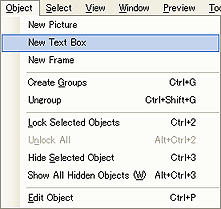
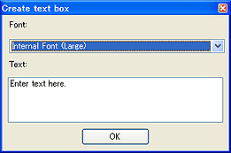
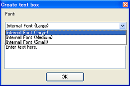

ページにテキストオブジェクトを配置できます。
メインメニューの[オブジェクト]→[新規テキスト]を選択。
または、[マウスの右クリックメニュー]→[新規テキスト]を選択。

テキストオブジェクト作成ダイアログが表示されますので、文を記入します。

テキストを入力し、フォントのプルダウンから任意の仕向け先の本体内蔵フォントとサイズを選択します。

尚、本体の仕向け先に応じて使用できるフォントが限られますのでご注意ください。
| DSi本体の仕向け先 | 使用できるフォント |
| 日本、北米、欧州、豪州 | 本体内蔵フォント大 本体内蔵フォント中 本体内蔵フォント小 |
| 中国 | 中国版：本体内蔵フォント大 中国版：本体内蔵フォント中 中国版：本体内蔵フォント小 |
| 韓国 | 韓国版：本体内蔵フォント大 韓国版：本体内蔵フォント中 韓国版：本体内蔵フォント小 |
注意）Editor上では各国版のフォントを混ぜて表示できますが、本体に内蔵されていないフォントは実機上では正しく表示できません。
テキストオブジェクトをダブルクリックすると、選択したテキストオブジェクトに応じたオブジェクト編集ウィンドウが開き、テキストの調整が出来ます。